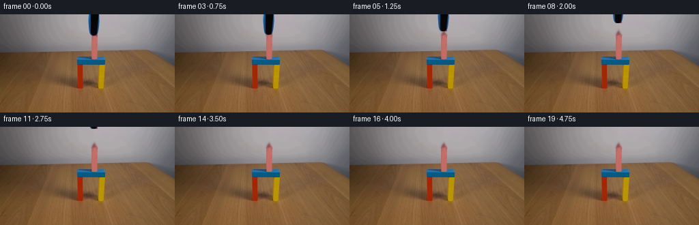
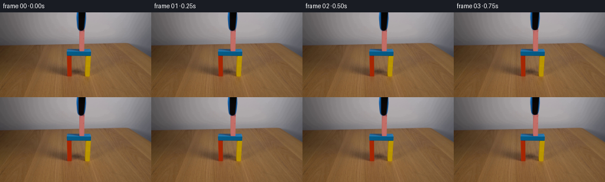

CODING AGENTS AS PIXEL WORLD MODELS
traex/GPT-5.6-Sol · 0173
点击播放 · 原生 RGB 像素
逐轮保存的候选
回放视频、检查图与代码变化。
每份候选均可单独播放。实际图片检查记录在下方工具轨迹中。
候选 01播放与检查图
点击播放 · 原生 RGB 像素


展开代码变化
--- 上一保存版本
+++ 本次保存版本
@@ -0,0 +1,138 @@
+from pathlib import Path
+
+import cv2
+import numpy as np
+from PIL import Image
+
+import artifact_io
+
+
+W, H = 256, 144
+N = 20
+
+
+def smoothstep(t: float) -> float:
+ t = float(np.clip(t, 0.0, 1.0))
+ return t * t * (3.0 - 2.0 * t)
+
+
+def make_clean_plate(frame: np.ndarray) -> np.ndarray:
+ """Reconstruct the neutral wall hidden behind the overhead grabber."""
+ clean = frame.copy()
+
+ # The tool occupies a narrow, tapered region at the top center. A padded
+ # mask lets Telea interpolation carry the existing wall gradient and fine
+ # camera texture naturally across that region.
+ mask = np.zeros((H, W), np.uint8)
+ outline = np.array(
+ [[128, 0], [147, 0], [147, 13], [146, 22], [145, 27],
+ [144, 29], [143, 30], [132, 30], [130, 27], [129, 18]],
+ np.int32,
+ )
+ cv2.fillPoly(mask, [outline], 255)
+ wall = cv2.inpaint(frame, mask, 3, cv2.INPAINT_TELEA)
+ clean[mask != 0] = wall[mask != 0]
+
+ # Once the jaws lift, the top of the pink block becomes visible where the
+ # tool tip overlapped it. Continue the observed pink face upward with a
+ # softly antialiased top edge. Rows below 31 remain original source pixels.
+ for y, coverage in ((29, 0.16), (30, 0.58), (31, 0.88)):
+ # The face itself is sampled from nearby unoccluded rows, preserving
+ # the source lighting: bright center, darker side edges.
+ sample_y = min(35, max(32, y + 3))
+ for x in range(133, 144):
+ # Rounded/soft top and side silhouette.
+ side = np.clip(min(x - 132.4, 143.6 - x), 0.0, 1.0)
+ a = coverage * side
+ if a <= 0:
+ continue
+ sx = int(np.clip(x, 134, 142))
+ pink = frame[sample_y, sx].astype(np.float32)
+ base = clean[y, x].astype(np.float32)
+ clean[y, x] = np.clip(base * (1.0 - a) + pink * a, 0, 255).astype(np.uint8)
+
+ return clean
+
+
+def extract_tool(frame: np.ndarray, clean: np.ndarray) -> np.ndarray:
+ """Estimate an antialiased occupancy matte for the blue-black tool."""
+ diff = np.linalg.norm(frame.astype(np.float32) - clean.astype(np.float32), axis=2)
+ matte = np.zeros((H, W), np.float32)
+
+ # Tapered physical silhouette. The color difference supplies soft edge
+ # coverage while this silhouette prevents wall noise from being moved.
+ silhouette = np.zeros((H, W), np.uint8)
+ outline = np.array(
+ [[128, 0], [147, 0], [147, 13], [146, 22], [145, 27],
+ [144, 29], [143, 30], [132, 30], [130, 27], [129, 18]],
+ np.int32,
+ )
+ cv2.fillPoly(silhouette, [outline], 255)
+ matte = np.clip((diff - 2.0) / 28.0, 0.0, 1.0)
+ matte *= silhouette.astype(np.float32) / 255.0
+
+ # Definite dark core and strongly blue casing are fully opaque.
+ dark = frame.max(axis=2) < 70
+ blue = ((frame[:, :, 2].astype(np.int16) - frame[:, :, 0].astype(np.int16) > 35) &
+ (frame[:, :, 2].astype(np.int16) - frame[:, :, 1].astype(np.int16) > 18))
+ matte[(silhouette != 0) & (dark | blue)] = 1.0
+ return matte
+
+
+def composite_shifted_tool(clean: np.ndarray, source: np.ndarray,
+ matte: np.ndarray, rise: int) -> np.ndarray:
+ """Composite the extracted tool after a vertical, upward translation."""
+ out = clean.astype(np.float32).copy()
+ if rise >= 31:
+ return clean.copy()
+ # Destination row y receives source row y+rise.
+ src_y0 = rise
+ src_y1 = 31
+ dst_y0 = 0
+ dst_y1 = src_y1 - src_y0
+ if dst_y1 <= 0:
+ return clean.copy()
+ a = matte[src_y0:src_y1, :, None]
+ src = source[src_y0:src_y1].astype(np.float32)
+ dst = out[dst_y0:dst_y1]
+ out[dst_y0:dst_y1] = src * a + dst * (1.0 - a)
+ return np.clip(np.rint(out), 0, 255).astype(np.uint8)
+
+
+def generate() -> np.ndarray:
+ case_dir = Path(__file__).resolve().parent
+ first = np.asarray(Image.open(case_dir / "first_frame.png").convert("RGB"), dtype=np.uint8)
+ assert first.shape == (H, W, 3)
+
+ clean = make_clean_plate(first)
+ matte = extract_tool(first, clean)
+
+ frames = []
+ # A short pause communicates that placement is complete. Then the tool
+ # eases upward, accelerates, and eases out of frame. The placed block and
+ # colorful gate never move.
+ for i in range(N):
+ if i == 0:
+ frame = first.copy() # contract: byte-identical source frame
+ elif i <= 2:
+ frame = first.copy()
+ elif i <= 13:
+ phase = (i - 2) / 11.0
+ rise = int(round(31.0 * smoothstep(phase)))
+ if rise == 0:
+ frame = first.copy()
+ else:
+ frame = composite_shifted_tool(clean, first, matte, rise)
+ else:
+ frame = clean.copy()
+ frames.append(frame)
+
+ frames = np.stack(frames).astype(np.uint8)
+ assert frames.shape == (N, H, W, 3)
+ assert np.array_equal(frames[0], first)
+ return frames
+
+
+if __name__ == "__main__":
+ directory = Path(__file__).resolve().parent
+ artifact_io.save(generate(), directory)
可观测工具轨迹
实际执行的命令与返回图片。
命令 1exit 0
/bin/bash -lc "cat prompt.txt && printf '\\n--- GENERATION_RULES ---\\n' && cat GENERATION_RULES.md"
命令 2exit 127
/bin/bash -lc "find . -maxdepth 2 -type f -printf '%p\\n' | sort && printf '\\n--- image metadata ---\\n' && file first_frame.png"
命令 3exit 0
/bin/bash -lc "sed -n '1,240p' artifact_io.py"
命令 4exit 0
/bin/bash -lc "python - <<'PY'
from PIL import Image
import numpy as np
im=np.array(Image.open('first_frame.png').convert('RGB'))
print(im.shape,im.dtype,im.min(),im.max())
print('corners', im[0,0],im[0,-1],im[-1,0],im[-1,-1], 'mean',im.mean((0,1)).round(2))
# rows and cols average and sample
for y in range(0,144,8): print('row',y,im[y].mean(0).astype(int), im[y].min(0), im[y].max(0))
print('--- coarse dominant color chars in 8x8 blocks ---')
# categories based rgb relationships
for by in range(0,144,6):
s=''
for bx in range(0,256,6):
p=im[by:min(by+6,144),bx:min(bx+6,256)].mean((0,1)); r,g,b=p
if max(p)-min(p)<12: c='.' if max(p)>180 else ':' if max(p)>100 else '#'
elif r>g*1.25 and r>b*1.2: c='R'
elif b>r*1.18 and b>g*1.08: c='B'
elif g>r*1.1 and g>b*1.05: c='G'
elif r>150 and g>110 and b<100: c='Y'
elif r>b*1.15 and b>g*.8: c='P'
else:c='o'
s+=c
print(f'{by:03d}',s)
PY"命令 5exit 1
/bin/bash -lc "python - <<'PY'
import cv2,numpy as np
from PIL import Image
im=np.array(Image.open('first_frame.png').convert('RGB'))
hsv=cv2.cvtColor(im,cv2.COLOR_RGB2HSV)
for name,m in [
('sat>80',(hsv[:,:,1]>80)),('sat>120',(hsv[:,:,1]>120)),
('pink',(im[:,:,0]>140)&(im[:,:,0]>im[:,:,1]*1.35)&(im[:,:,2]>im[:,:,1]*1.15)),
('blue',(im[:,:,2]>im[:,:,0]*1.2)&(im[:,:,2]>im[:,:,1]*1.1)),
('green',(im[:,:,1]>im[:,:,0]*1.2)&(im[:,:,1]>im[:,:,2]*1.15)),
('yellow',(im[:,:,0]>140)&(im[:,:,1]>100)&(im[:,:,2]<90)&(im[:,:,0]<im[:,:,1]*1.8)),
('dark',(im.max(2)<65)),
('notwood',(np.indices(im.shape[:2])[0]>52)&~((im[:,:,0]>90)&(im[:,:,0]>im[:,:,1]*1.25)&(im[:,:,1]>im[:,:,2]*1.25)),
]:
m=m.astype('uint8')*255
n,ls,st,ct=cv2.connectedComponentsWithStats(m,8)
print('\\n',name,'count',int((m>0).sum()))
for j in np.argsort(st[1:,4])[::-1][:15]+1:
x,y,w,h,a=st[j];
if a>=3: print(' ',a,[x,y,w,h],np.rint(ct[j]).astype(int).tolist())
PY"命令 6exit 0
/bin/bash -lc "python - <<'PY'
import cv2, numpy as np
from PIL import Image
im=np.array(Image.open('first_frame.png').convert('RGB'))
Z=im.reshape(-1,3).astype(np.float32)
crit=(cv2.TERM_CRITERIA_EPS+cv2.TERM_CRITERIA_MAX_ITER,100,.2)
_,lab,cen=cv2.kmeans(Z,12,None,crit,20,cv2.KMEANS_PP_CENTERS)
lab=lab.ravel(); cen=np.rint(cen).astype(int)
for i in np.argsort(np.bincount(lab))[::-1]:
yy,xx=np.where(lab.reshape(im.shape[:2])==i)
print(i,'center',cen[i].tolist(),'n',len(xx),'bbox', [xx.min(),yy.min(),xx.max(),yy.max()])
PY"命令 7exit 0
/bin/bash -lc "python - <<'PY'
from PIL import Image
import numpy as np
im=np.array(Image.open('first_frame.png').convert('RGB'))
# precise ascii in central area x70:190 y0:115, 3x3 based relative color and values
for y in range(0,115,3):
s=''
for x in range(65,195,3):
p=np.median(im[y:y+3,x:x+3].reshape(-1,3),0); r,g,b=p
if max(p)<45:c='X'
elif max(p)<80:c='x'
elif max(p)-min(p)<12:c='.'
elif r>g*1.45 and b>g*1.3:c='P'
elif r>g*1.4 and r>b*1.2:c='r'
elif b>r*1.2 and b>g*1.12:c='B'
elif g>r*1.2 and g>b*1.1:c='G'
elif r>140 and g>100 and b<90:c='Y'
elif b>g*1.12 and r>g*1.12:c='p'
elif r>g*1.2 and g>b*1.15:c='w'
else:c='o'
s+=c
print(f'{y:03d}',s)
PY"命令 8exit 1
/bin/bash -lc "python - <<'PY'
import cv2,numpy as np
from PIL import Image
im=np.array(Image.open('first_frame.png').convert('RGB'))
hsv=cv2.cvtColor(im,cv2.COLOR_RGB2HSV)
sets=[
('sat>80',hsv[:,:,1]>80),('sat>120',hsv[:,:,1]>120),
('pink',(im[:,:,0]>140)&(im[:,:,0]>im[:,:,1]*1.35)&(im[:,:,2]>im[:,:,1]*1.15)),
('blue',(im[:,:,2]>im[:,:,0]*1.2)&(im[:,:,2]>im[:,:,1]*1.1)),
('green',(im[:,:,1]>im[:,:,0]*1.2)&(im[:,:,1]>im[:,:,2]*1.15)),
('yellow',(im[:,:,0]>140)&(im[:,:,1]>100)&(im[:,:,2]<90)&(im[:,:,0]<im[:,:,1]*1.8)),
('dark',im.max(2)<65),
('notwood',(np.indices(im.shape[:2])[0]>52)&~((im[:,:,0]>90)&(im[:,:,0]>im[:,:,1]*1.25)&(im[:,:,1]>im[:,:,2]*1.25)))
]
for name,mask in sets:
m=mask.astype('uint8')
n,ls,st,ct=cv2.connectedComponentsWithStats(m,8)
print('\\n',name,'count',int(m.sum()))
for j in np.argsort(st[1:,4])[::-1][:15]+1:
x,y,w,h,a=st[j]
if a>=3: print(' ',a,[x,y,w,h],np.rint(ct[j],1).tolist())
PY"命令 9exit 0
/bin/bash -lc "python - <<'PY'
from PIL import Image
import numpy as np
im=np.array(Image.open('first_frame.png').convert('RGB'))
# print runs by row of classified high saturation pixels
for y in list(range(0,80,2))+list(range(80,116,4)):
chars=[]
for x in range(95,176):
r,g,b=map(int,im[y,x]);
if max(r,g,b)<40:c='K'
elif max(r,g,b)-min(r,g,b)<20:c='.'
elif r>140 and r>g*1.35 and b>g*1.15:c='P'
elif b>r*1.18 and b>g*1.08:c='B'
elif g>r*1.15 and g>b*1.08:c='G'
elif r>135 and g>95 and b<80:c='Y'
elif r>g*1.35 and g>b*1.25:c='R'
elif r>g*1.2 and g>b*1.15:c='w'
else:c='o'
chars.append(c)
# compact runs non-background class .=grey, w=wood
runs=[]; st=0
for i in range(1,len(chars)+1):
if i==len(chars) or chars[i]"'!=chars[st]:
if chars[st] not in '"'.wo' or i-st>=3:runs.append(f'{95+st}-{94+i}:{chars[st]}')
st=i
print(f'y={y:3}', ' '.join(runs))
PY"命令 10exit 0
/bin/bash -lc "python - <<'PY'
from PIL import Image
import numpy as np
im=np.array(Image.open('first_frame.png').convert('RGB'))
# unique-ish median values in object coords per tile
for y in range(0,112,4):
print('y',y,end=' ')
last=None; start=105
vals=[]
for x in range(105,165):
p=tuple((im[y:min(y+4,144),x:x+1].mean((0,1))//10*10).astype(int))
if last is None:last=p;start=x
elif p"'!=last:
if max(last)-min(last)>20 or max(last)<80: vals.append((start,x-1,last))
last=p; start=x
if max(last)-min(last)>20 or max(last)<80:vals.append((start,164,last))
print(vals)
PY'命令 11exit 0
/bin/bash -lc "python - <<'PY'
from PIL import Image
import numpy as np
im=np.array(Image.open('first_frame.png').convert('RGB'))
for y in range(24,36):
print('\\ny',y)
for x in range(125,152): print(f'{x}:{tuple(im[y,x])}',end=' ')
print()
PY"命令 12exit 0
/bin/bash -lc "python - <<'PY'
import cv2,numpy as np
from PIL import Image
im=np.array(Image.open('first_frame.png').convert('RGB'))
hsv=cv2.cvtColor(im,cv2.COLOR_RGB2HSV)
sets=[('sat>80',hsv[:,:,1]>80),('sat>120',hsv[:,:,1]>120),('pink',(im[:,:,0]>140)&(im[:,:,0]>im[:,:,1]*1.35)&(im[:,:,2]>im[:,:,1]*1.15)),('blue',(im[:,:,2]>im[:,:,0]*1.2)&(im[:,:,2]>im[:,:,1]*1.1)),('green',(im[:,:,1]>im[:,:,0]*1.2)&(im[:,:,1]>im[:,:,2]*1.15)),('yellow',(im[:,:,0]>140)&(im[:,:,1]>100)&(im[:,:,2]<90)&(im[:,:,0]<im[:,:,1]*1.8)),('dark',im.max(2)<65)]
for name,mask in sets:
m=mask.astype('uint8'); n,labels,stats,centroids=cv2.connectedComponentsWithStats(m,8)
print('\\n',name,'count',int(m.sum()))
for j in np.argsort(stats[1:,4])[::-1][:15]+1:
x,y,w,h,a=stats[j]
if a>=3: print(' ',int(a),list(map(int,[x,y,w,h])),np.round(centroids[j],1).tolist())
PY"命令 13exit 0
/bin/bash -lc "cat > generate.py <<'PY'
from pathlib import Path
import cv2
import numpy as np
from PIL import Image
import artifact_io
W, H = 256, 144
N = 20
def smoothstep(t: float) -> float:
t = float(np.clip(t, 0.0, 1.0))
return t * t * (3.0 - 2.0 * t)
def make_clean_plate(frame: np.ndarray) -> np.ndarray:
\"\"\"Reconstruct the neutral wall hidden behind the overhead grabber.\"\"\"
clean = frame.copy()
# The tool occupies a narrow, tapered region at the top center. A padded
# mask lets Telea interpolation carry the existing wall gradient and fine
# camera texture naturally across that region.
mask = np.zeros((H, W), np.uint8)
outline = np.array(
[[128, 0], [147, 0], [147, 13], [146, 22], [145, 27],
[144, 29], [143, 30], [132, 30], [130, 27], [129, 18]],
np.int32,
)
cv2.fillPoly(mask, [outline], 255)
wall = cv2.inpaint(frame, mask, 3, cv2.INPAINT_TELEA)
clean[mask "'!= 0] = wall[mask != 0]
# Once the jaws lift, the top of the pink block becomes visible where the
# tool tip overlapped it. Continue the observed pink face upward with a
# softly antialiased top edge. Rows below 31 remain original source pixels.
for y, coverage in ((29, 0.16), (30, 0.58), (31, 0.88)):
# The face itself is sampled from nearby unoccluded rows, preserving
# the source lighting: bright center, darker side edges.
sample_y = min(35, max(32, y + 3))
for x in range(133, 144):
# Rounded/soft top and side silhouette.
side = np.clip(min(x - 132.4, 143.6 - x), 0.0, 1.0)
a = coverage * side
if a <= 0:
continue
sx = int(np.clip(x, 134, 142))
pink = frame[sample_y, sx].astype(np.float32)
base = clean[y, x].astype(np.float32)
clean[y, x] = np.clip(base * (1.0 - a) + pink * a, 0, 255).astype(np.uint8)
return clean
def extract_tool(frame: np.ndarray, clean: np.ndarray) -> np.ndarray:
"""Estimate an antialiased occupancy matte for the blue-black tool."""
diff = np.linalg.norm(frame.astype(np.float32) - clean.astype(np.float32), axis=2)
matte = np.zeros((H, W), np.float32)
# Tapered physical silhouette. The color difference supplies soft edge
# coverage while this silhouette prevents wall noise from being moved.
silhouette = np.zeros((H, W), np.uint8)
outline = np.array(
[[128, 0], [147, 0], [147, 13], [146, 22], [145, 27],
[144, 29], [143, 30], [132, 30], [130, 27], [129, 18]],
np.int32,
)
cv2.fillPoly(silhouette, [outline], 255)
matte = np.clip((diff - 2.0) / 28.0, 0.0, 1.0)
matte *= silhouette.astype(np.float32) / 255.0
# Definite dark core and strongly blue casing are fully opaque.
dark = frame.max(axis=2) < 70
blue = ((frame[:, :, 2].astype(np.int16) - frame[:, :, 0].astype(np.int16) > 35) &
(frame[:, :, 2].astype(np.int16) - frame[:, :, 1].astype(np.int16) > 18))
matte[(silhouette != 0) & (dark | blue)] = 1.0
return matte
def composite_shifted_tool(clean: np.ndarray, source: np.ndarray,
matte: np.ndarray, rise: int) -> np.ndarray:
"""Composite the extracted tool after a vertical, upward translation."""
out = clean.astype(np.float32).copy()
if rise >= 31:
return clean.copy()
# Destination row y receives source row y+rise.
src_y0 = rise
src_y1 = 31
dst_y0 = 0
dst_y1 = src_y1 - src_y0
if dst_y1 <= 0:
return clean.copy()
a = matte[src_y0:src_y1, :, None]
src = source[src_y0:src_y1].astype(np.float32)
dst = out[dst_y0:dst_y1]
out[dst_y0:dst_y1] = src * a + dst * (1.0 - a)
return np.clip(np.rint(out), 0, 255).astype(np.uint8)
def generate() -> np.ndarray:
case_dir = Path(__file__).resolve().parent
first = np.asarray(Image.open(case_dir / "first_frame.png").convert("RGB"), dtype=np.uint8)
assert first.shape == (H, W, 3)
clean = make_clean_plate(first)
matte = extract_tool(first, clean)
frames = []
# A short pause communicates that placement is complete. Then the tool
# eases upward, accelerates, and eases out of frame. The placed block and
# colorful gate never move.
for i in range(N):
if i == 0:
frame = first.copy() # contract: byte-identical source frame
elif i <= 2:
frame = first.copy()
elif i <= 13:
phase = (i - 2) / 11.0
rise = int(round(31.0 * smoothstep(phase)))
if rise == 0:
frame = first.copy()
else:
frame = composite_shifted_tool(clean, first, matte, rise)
else:
frame = clean.copy()
frames.append(frame)
frames = np.stack(frames).astype(np.uint8)
assert frames.shape == (N, H, W, 3)
assert np.array_equal(frames[0], first)
return frames
if __name__ == "__main__":
directory = Path(__file__).resolve().parent
artifact_io.save(generate(), directory)
PY
python generate.py
python - <<'"'PY'
from pathlib import Path
from PIL import Image
import numpy as np
z=np.load('pixels.npz')['pixels']
frames=np.stack([np.array(Image.open(f'frames/{i:02d}.png').convert('RGB')) for i in range(20)])
first=np.array(Image.open('first_frame.png').convert('RGB'))
print('frames',frames.shape,frames.dtype,'packed',z.shape,z.dtype)
print('frame00 exact:',np.array_equal(frames[0],first))
for i in range(20):
d=np.any(frames[i]"'!=first,axis=2); ys,xs=np.where(d)
print(i, int(d.sum()), None if not len(xs) else (int(xs.min()),int(ys.min()),int(xs.max()),int(ys.max())), '"'MAD',round(float(np.abs(frames[i].astype(int)-first).mean()),4))
print('outputs:', [p.name for p in Path('.').glob('*') if p.is_file()])
PY"命令 14exit 0
/bin/bash -lc 'sha256sum first_frame.png frames/00.png pixels.npz generate.py && du -h pixels.npz index.html inspection.png'
命令 15exit 0
/bin/bash -lc "python - <<'PY'
import generate, numpy as np
from PIL import Image
A=generate.generate(); B=generate.generate(); src=np.array(Image.open('first_frame.png').convert('RGB'))
assert A.shape==(20,144,256,3) and A.dtype==np.uint8
assert np.array_equal(A[0],src) and np.array_equal(A,B)
# Confirm every changed pixel is confined to the tool/pink-top interaction region.
for i in range(20):
m=np.any(A[i]"'!=src,2)
outside=m.copy(); outside[:32,128:148]=False
assert not outside.any(), (i,int(outside.sum()))
# Tool-dark-pixel vertical extents/centroid per frame in interaction ROI.
for i in range(20):
roi=A[i,:32,128:148]
dark=(roi.max(2)<70)
y,x=np.where(dark)
print(f'"'{i:02d}: dark={len(y):3d}', 'none' if not len(y) else f'y={y.min()}..{y.max()} cy={y.mean():.2f}')
print('VALIDATION_OK')
PY"保存候选 1 份；完成命令 15 次；可验证图片返回 0 张。原始 API 响应与完整日志保留在本地。